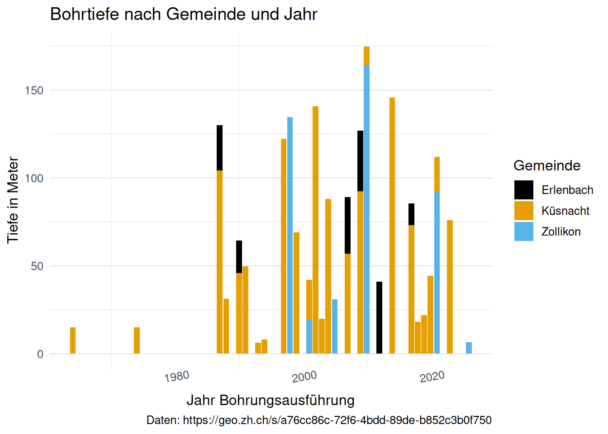
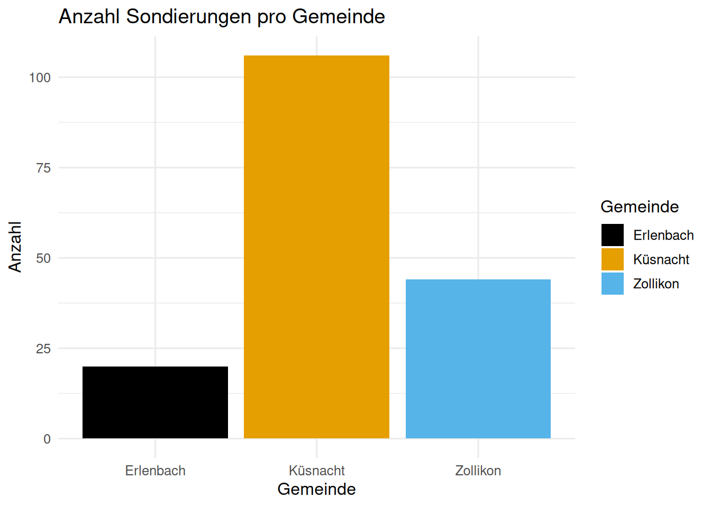
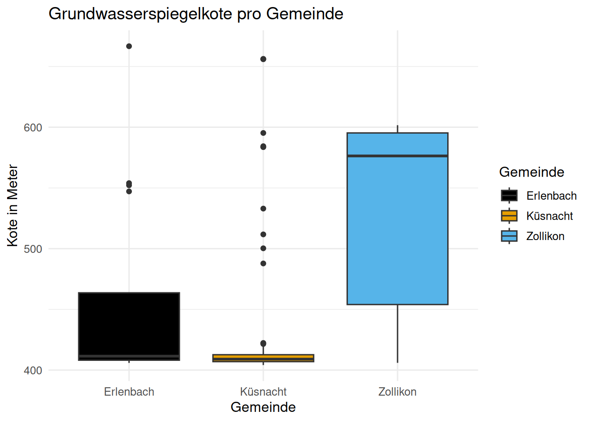
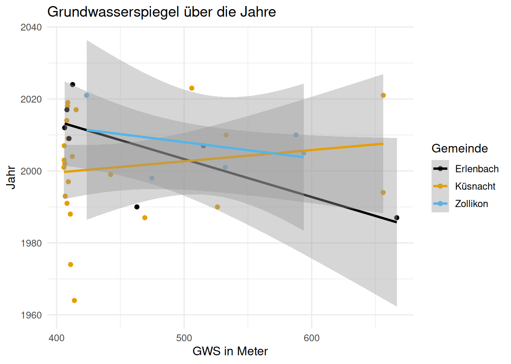
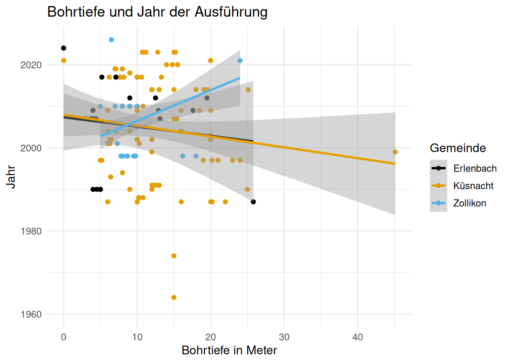
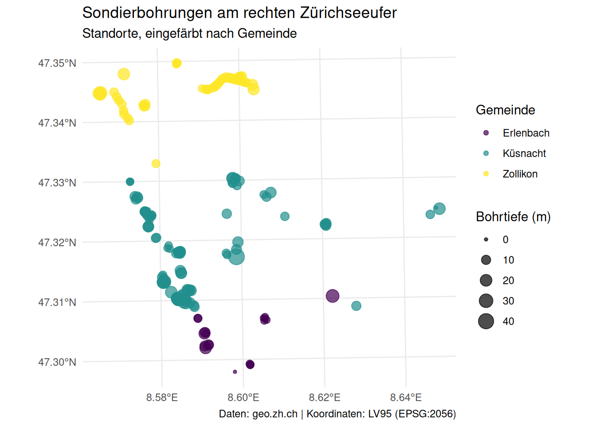

library(tidyverse)
library(ggthemes)
library(sf)Sondierbohrungen II
Über dieses Dokument
Analyse der Sondierbohrungen in den Gemeinden Zollikon, Küsnacht und Erlenbach am rechten Zürichseeufer. Dieses Dokument liest die Rohdaten ein, bereinigt sie und stellt Bohrtiefe und Grundwasserspiegel dar. Am Schluss werden die Bohrungen als Karte visualisiert.
Pakete werden einmalig in der Konsole installiert, nicht im Dokument. Alle library()-Aufrufe stehen gebündelt im ersten Chunk.
Daten einlesen
Die CSV-Datei ist UTF-8-kodiert. Deshalb lesen wir sie mit encoding = "UTF-8" ein. So kommen die Umlaute (Küsnacht, Zürich, Jäckli) von Anfang an korrekt an und die früher nötigen manuellen Umlaut-Korrekturen entfallen vollständig.
Sondierbohrungen <- read_delim(
here::here("daten/raw/SondierbohrungenZollikonKüsnachtErlenbach.CSV"),
delim = ";",
locale = locale(encoding = "UTF-8"),
show_col_types = FALSE
)Welche Gemeinden sind im File?
Sondierbohrungen |>
distinct(Gemeinde)# A tibble: 3 × 1
Gemeinde
<chr>
1 Zollikon
2 Küsnacht (ZH)
3 Erlenbach (ZH)Spalten umbenennen und auswählen
Sondierbohrungen <- Sondierbohrungen |>
rename(
Terrainkote_m = "Terrainkote der Bohrung",
Jahr = "Ausführungsjahr",
Flurabstand_m = "Flurabstand an diesem Tag",
Bohrtiefe_m = Bohrtiefe,
east_coordinate_lv95 = XKOORD,
north_coordinate_lv95 = YKOORD
) |>
select(
Gemeinde, east_coordinate_lv95, north_coordinate_lv95,
Terrainkote_m, Jahr, Bohrtiefe_m, Felstiefe,
Grundwasserspiegelkote, Flurabstand_m, Firma
)Datentypen umwandeln
Die Koordinaten und Meterangaben werden als Text eingelesen. Wir wandeln sie mit mutate(across(...)) in Zahlen um und schreiben das Ergebnis direkt in die Tabelle zurück. So stimmen die Typen für alle folgenden Chunks.
Hinweis: In der Spalte Grundwasserspiegelkote stehen in einigen Zeilen Excel-Fehler (“FALSCH”). Diese werden bei der Umwandlung zu NA (mit einer Warnung), das ist gewollt.
Sondierbohrungen <- Sondierbohrungen |>
mutate(across(
c(east_coordinate_lv95, north_coordinate_lv95,
Bohrtiefe_m, Terrainkote_m, Grundwasserspiegelkote),
as.numeric
))
glimpse(Sondierbohrungen)Rows: 170
Columns: 10
$ Gemeinde <chr> "Zollikon", "Zollikon", "Zollikon", "Zollikon",…
$ east_coordinate_lv95 <dbl> 2686211, 2686593, 2685614, 2685156, 2685169, 26…
$ north_coordinate_lv95 <dbl> 1243082, 1244955, 1244746, 1244389, 1244376, 12…
$ Terrainkote_m <dbl> 475.50, 534.03, 461.94, 407.19, 407.34, 408.04,…
$ Jahr <dbl> 2026, 2001, 2021, 2021, 2021, 2021, 1998, 1998,…
$ Bohrtiefe_m <dbl> 6.5, 7.3, 20.0, 24.0, 24.0, 24.0, 18.0, 16.2, 8…
$ Felstiefe <dbl> NA, NA, 18.20, 21.70, 22.40, 20.95, NA, NA, NA,…
$ Grundwasserspiegelkote <dbl> NA, 532.13, 458.34, 405.98, NA, 406.28, 596.31,…
$ Flurabstand_m <dbl> NA, 1.90, 3.60, 1.21, NA, 1.76, 14.37, 9.70, NA…
$ Firma <chr> "abigroup", "Dr. Heinrich Jäckli AG", "Dr. von …Gemeinde- und Firmennamen bereinigen
Die Gemeindenamen tragen den Zusatz “(ZH)”. Den entfernen wir, damit die Namen kurz und einheitlich sind.
Sondierbohrungen <- Sondierbohrungen |>
mutate(Gemeinde = str_remove(Gemeinde, "\\s*\\(ZH\\)"))
Sondierbohrungen |>
distinct(Gemeinde)# A tibble: 3 × 1
Gemeinde
<chr>
1 Zollikon
2 Küsnacht
3 ErlenbachEin Firmenname wird vereinheitlicht: “Dr. Heinrich Jäckli AG” heisst heute “Jäckli Geologie AG”.
Sondierbohrungen <- Sondierbohrungen |>
mutate(Firma = str_replace_all(
Firma, "Dr\\. Heinrich Jäckli AG", "Jäckli Geologie AG"
))Datenfehler korrigieren
Zwei Werte in den Daten sind fehlerhaft und werden über eine Bedingung korrigiert, nicht über die Zeilennummer. Eine Korrektur per Zeilennummer (Sondierbohrungen[155, 8] <- ...) funktioniert nur, solange die Zeilenreihenfolge exakt gleich bleibt. Sobald vorher gefiltert oder sortiert wird, zeigt Zeile 155 auf einen anderen Datensatz. Mit einer Bedingung wird der richtige Wert unabhängig von der Position gefunden.
Ausreisser bei der Bohrtiefe. Küsnacht hat für 1960 eine Bohrtiefe von 2692.5 Meter. Alle anderen Werte liegen zwischen 0 und rund 45 Meter. Diese Bohrung ist tatsächlich eine der tiefsten der Schweiz, aber als Ausnahme für die folgenden Darstellungen und Berechnungen ungeeignet: der eine Wert zieht die y-Achse auf ~2700 hoch, sodass alle echten Balken zu einem unsichtbaren Strich zusammengedrückt werden. Wir setzen ihn deshalb auf NA und dokumentieren ihn hier separat.
# Küsnacht 1960: 2692.5 m Bohrtiefe (Ausreisser, separat dokumentiert)
Sondierbohrungen <- Sondierbohrungen |>
mutate(Bohrtiefe_m = if_else(Bohrtiefe_m > 100, NA_real_, Bohrtiefe_m))Vertauschte Werte beim Grundwasserspiegel. In der Zeile für Erlenbach 1987 sind Grundwasserspiegelkote (12.3) und Flurabstand (666.7) vertauscht. Wir tauschen sie über eine Bedingung zurück.
Sondierbohrungen <- Sondierbohrungen |>
mutate(
Grundwasserspiegelkote = case_when(
Grundwasserspiegelkote == 12.3 ~ 666.7,
.default = Grundwasserspiegelkote
),
Flurabstand_m = case_when(
Flurabstand_m == 666.7 ~ 12.3,
.default = Flurabstand_m
)
)Erste Auswertungen
Durchschnittlicher Grundwasserspiegel der Gemeinden im Jahr 1990.
Sondierbohrungen |>
filter(Jahr == 1990) |>
summarise(mean_GWS = mean(Grundwasserspiegelkote, na.rm = TRUE), .by = Gemeinde)# A tibble: 2 × 2
Gemeinde mean_GWS
<chr> <dbl>
1 Küsnacht 526.
2 Erlenbach 463.Koordinaten absteigend sortieren.
Sondierbohrungen |>
arrange(desc(east_coordinate_lv95), desc(north_coordinate_lv95))# A tibble: 170 × 10
Gemeinde east_coordinate_lv95 north_coordinate_lv95 Terrainkote_m Jahr
<chr> <dbl> <dbl> <dbl> <dbl>
1 Küsnacht 2691486 1242243 670. 2021
2 Küsnacht 2691424 1242261 673. 2021
3 Küsnacht 2691315 1242137 659. 1994
4 Küsnacht 2689940 1240436 416. 1988
5 Erlenbach 2689498 1240620 679 1987
6 Küsnacht 2689381 1241974 607. 2023
7 Küsnacht 2689375 1241926 606. 2023
8 Küsnacht 2689372 1241950 607. 2023
9 Küsnacht 2689353 1241954 606. 2023
10 Küsnacht 2689296 1241485 642. 1960
# ℹ 160 more rows
# ℹ 5 more variables: Bohrtiefe_m <dbl>, Felstiefe <dbl>,
# Grundwasserspiegelkote <dbl>, Flurabstand_m <dbl>, Firma <chr>Bohrtiefe nach Gemeinde und Jahr
Da der Ausreisser jetzt NA ist, brauchen wir die y-Achse nicht mehr von Hand mit scale_y_continuous(limits = ...) zu begrenzen. Das ist wichtig: limits löscht alle Zeilen ausserhalb des Bereichs vor dem Zeichnen (daher die Warnung “Removed N rows”) und lässt so Gemeinden wie Erlenbach verschwinden. Zum Zoomen verwenden wir bei Bedarf coord_cartesian(), das die Ansicht zoomt, ohne Daten zu löschen.
ggplot(
data = Sondierbohrungen,
mapping = aes(x = Jahr, y = Bohrtiefe_m, fill = Gemeinde)
) +
geom_col(na.rm = TRUE) +
scale_fill_colorblind() +
labs(
title = "Bohrtiefe nach Gemeinde und Jahr",
x = "Jahr Bohrungsausführung",
y = "Tiefe in Meter",
caption = "Daten: https://geo.zh.ch/s/a76cc86c-72f6-4bdd-89de-b852c3b0f750",
fill = "Gemeinde"
) +
theme_minimal(base_size = 12) +
theme(
panel.grid.major.x = element_blank(),
axis.text.x = element_text(angle = 10, vjust = 1.5)
)Warning: `scale_fill_colorblind()` was deprecated in ggthemes 5.2.0.
Anzahl Sondierungen pro Gemeinde
ggplot(
data = Sondierbohrungen,
mapping = aes(x = Gemeinde, fill = Gemeinde)
) +
geom_bar() +
scale_fill_colorblind() +
labs(title = "Anzahl Sondierungen pro Gemeinde", y = "Anzahl") +
theme_minimal(base_size = 12)
Grundwasserspiegel auswerten
Mittlerer Grundwasserspiegel pro Gemeinde und Jahr.
gws_pro_jahr <- Sondierbohrungen |>
summarise(
GWS = mean(Grundwasserspiegelkote, na.rm = TRUE),
.by = c(Gemeinde, Jahr)
)
gws_pro_jahr# A tibble: 39 × 3
Gemeinde Jahr GWS
<chr> <dbl> <dbl>
1 Zollikon 2026 NaN
2 Zollikon 2001 532.
3 Zollikon 2021 424.
4 Zollikon 1998 475.
5 Zollikon 2010 588.
6 Zollikon 2005 594.
7 Küsnacht 1964 414
8 Küsnacht 2004 412.
9 Küsnacht 2009 409.
10 Küsnacht 1997 409.
# ℹ 29 more rowsAnzahl der Sondierungen pro Gemeinde und mittlerer Grundwasserspiegel.
Sondierbohrungen |>
summarise(
anzahl = n(),
GWS = mean(Grundwasserspiegelkote, na.rm = TRUE),
.by = Gemeinde
)# A tibble: 3 × 3
Gemeinde anzahl GWS
<chr> <int> <dbl>
1 Zollikon 44 531.
2 Küsnacht 106 431.
3 Erlenbach 20 459.Grundwasserspiegel pro Gemeinde als Boxplot.
ggplot(
data = Sondierbohrungen,
mapping = aes(x = Gemeinde, y = Grundwasserspiegelkote, fill = Gemeinde)
) +
geom_boxplot() +
scale_fill_colorblind() +
labs(title = "Grundwasserspiegelkote pro Gemeinde", y = "Kote in Meter") +
theme_minimal(base_size = 12)Warning: Removed 28 rows containing non-finite outside the scale range
(`stat_boxplot()`).
Grundwasserspiegel über die Jahre, mit Trendlinie pro Gemeinde.
ggplot(
data = gws_pro_jahr,
mapping = aes(x = GWS, y = Jahr, colour = Gemeinde)
) +
geom_point() +
geom_smooth(method = "lm", formula = y ~ x) +
scale_colour_colorblind() +
labs(title = "Grundwasserspiegel über die Jahre", x = "GWS in Meter") +
theme_minimal(base_size = 12)Warning: `scale_color_colorblind()` was deprecated in ggthemes 5.2.0.Warning: Removed 4 rows containing non-finite outside the scale range
(`stat_smooth()`).Warning: Removed 4 rows containing missing values or values outside the scale range
(`geom_point()`).
Bohrtiefe und Ausführungsjahr
ggplot(
data = Sondierbohrungen,
mapping = aes(x = Bohrtiefe_m, y = Jahr, colour = Gemeinde)
) +
geom_point(na.rm = TRUE) +
geom_smooth(method = "lm", formula = y ~ x, na.rm = TRUE) +
scale_colour_colorblind() +
labs(title = "Bohrtiefe und Jahr der Ausführung", x = "Bohrtiefe in Meter") +
theme_minimal(base_size = 12)
Karte der Sondierbohrungen
Aus den Koordinaten (LV95, EPSG:2056) bauen wir ein sf-Objekt und stellen die Bohrungen als Karte dar. Wichtig: bei coords kommt der Ostwert (east) zuerst, dann der Nordwert (north).
sondierungen_sf <- Sondierbohrungen |>
filter(!is.na(east_coordinate_lv95), !is.na(north_coordinate_lv95)) |>
st_as_sf(
coords = c("east_coordinate_lv95", "north_coordinate_lv95"),
crs = 2056
)ggplot(data = sondierungen_sf) +
geom_sf(aes(color = Gemeinde, size = Bohrtiefe_m), alpha = 0.7) +
scale_color_viridis_d() +
labs(
title = "Sondierbohrungen am rechten Zürichseeufer",
subtitle = "Standorte, eingefärbt nach Gemeinde",
color = "Gemeinde",
size = "Bohrtiefe (m)",
caption = "Daten: geo.zh.ch | Koordinaten: LV95 (EPSG:2056)"
) +
theme_minimal()Warning: Removed 1 row containing missing values or values outside the scale range
(`geom_sf()`).